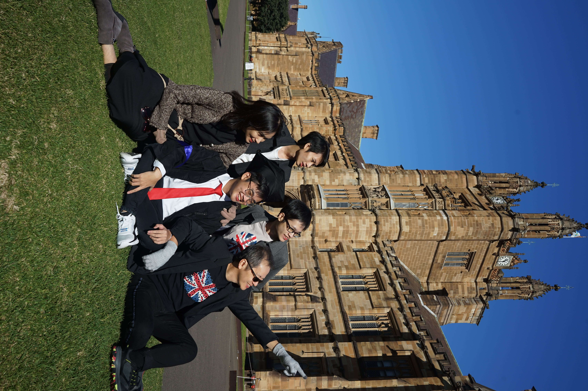

Essay Checker
Dapatkan skor 0–100, analisis struktur, kejelasan, dampak, dan kesesuaian dengan nilai LPDP. Feedback detail per paragraf.
- Kekuatan & Kelemahan
- Saran perbaikan konkret
- Analisis per paragraf
Bandingkan Essaymu dengan essay para awardee LPDP. Platform lengkap untuk menyiapkan essay, tes bakat skolastik, dan simulasi wawancara LPDP. Dirancang khusus untuk warga Indonesia.
Dari penyusunan essay hingga simulasi wawancara — semua yang kamu butuhkan dalam satu platform.
Dapatkan skor 0–100, analisis struktur, kejelasan, dampak, dan kesesuaian dengan nilai LPDP. Feedback detail per paragraf.
Latihan soal Tes Bakat Skolastik dengan kategori verbal, numerik, dan logika. Dilengkapi timer dan pembahasan instan.
Dapatkan pertanyaan wawancara yang dipersonalisasi berdasarkan essay-mu. Simulasi lengkap dengan evaluasi akhir.
Database kami berisi lebih dari seratus essay nyata yang berhasil meloloskan awardee — dikontribusikan langsung oleh alumni LPDP dari berbagai universitas di dalam dan luar negeri. Sistem akan menghitung kemiripan struktur, gaya, dan substansi essay-mu dengan referensi-referensi tersebut.
Sumbangsih oleh alumni LPDP. Privasi tetap terjaga — hanya struktur dan substansi yang dianalisis.

Sumbangkan essay yang berhasil meloloskan Anda. Sebagai apresiasi, Anda mendapat kode promo personal yang memberi 10% diskon ke calon awardee, dan Anda mendapat 10% komisi dari setiap pembelian Pro yang menggunakan kode tersebut.
Dapatkan kode unik (mis. NAMAMU10) yang bisa Anda bagikan ke kolega atau adik tingkat. Mereka hemat 10%, otomatis.
Setiap pembelian akun Pro yang memakai kode Anda, 10% nilainya kembali ke Anda. Cair via transfer bank tiap bulan.
Essay Anda jadi acuan AI untuk membantu pejuang LPDP lain memetakan struktur dan substansi essay yang menang.
Setiap pendaftar diverifikasi manual oleh tim kami. Setelah disetujui, Anda akan mendapatkan akses ke halaman kontribusi essay dan kode promo personal.
"Essay checker membantu saya menemukan kelemahan di bagian rencana studi. Setelah revisi 3 kali, akhirnya lolos LPDP 2025!"
"Simulasi wawancara dengan kamera dan timer terasa seperti yang asli. Kepercayaan diri saya naik banyak."
"Database referensi-nya luar biasa. Bisa bandingin essay sendiri dengan essay awardee terdahulu — game changer!"
"TBS practice-nya bantu banget, terutama bagian numerik. Pembahasan tiap soal jelas dan mudah dipahami."
"AI-generated questions bener-bener menggali essay saya. Latihan jadi lebih bermakna, bukan cuma jawaban hafalan."
"Skoring essay langsung kasih insight per paragraf. Saya tahu persis bagian mana yang harus diperbaiki."
"Fitur pause saat interview sangat membantu. Bisa berhenti sebentar tanpa kehilangan progress rekaman."
"Sebagai fresh graduate, pertanyaan AI tentang motivasi S2 langsung kena. Akhirnya tahu harus jawab apa pas wawancara asli."
"Dua bulan rutin latihan di sini, akhirnya lolos LPDP. Worth banget — apalagi yang gratis."
"Bilingual support sangat membantu. Saya latihan jawab dalam English untuk persiapan wawancara internasional."
Mulai dari essay, TBS, atau langsung ke simulasi wawancara sesuai kebutuhanmu.
Tulis essay, jawab soal, atau ketik jawaban wawancara dalam antarmuka yang fokus.
Dapatkan skor, analisis mendalam, dan saran perbaikan yang bisa langsung diterapkan.
Gratis, tanpa instalasi. Cukup buka dan mulai.